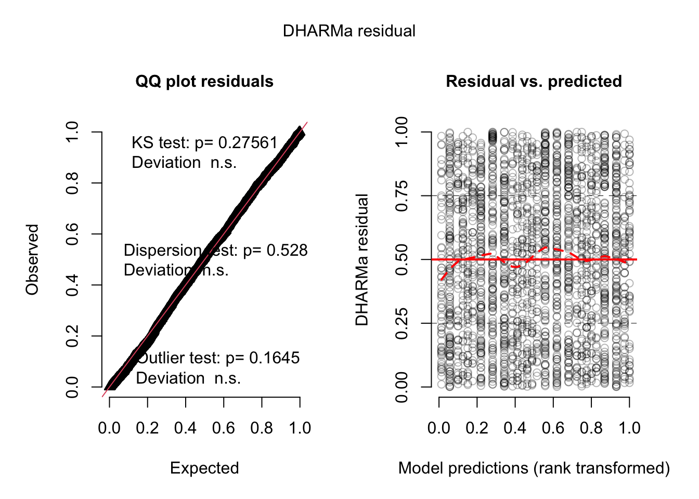

# A tibble: 12 × 4
# Groups: unit [12]
unit ice acc ess
<chr> <int> <int> <int>
1 Cordillera de Merida 60 16 31
2 Cordilleras Norte de Peru 0 3 10
3 Cordilleras Orientales de Peru y Bolivia 0 2 5
4 Cordilleras de Colombia 0 9 15
5 Ecuador 0 0 3
6 Kilimanjaro 22 0 1
7 Mexico 22 0 1
8 Mount Kenia 65 10 19
9 Puncak Jaya 72 0 22
10 Ruwenzori 47 6 11
11 Sierra Nevada de Santa Marta 17 0 5
12 Volcanos de Peru y Chile 0 0 310 Prediction of collapse
Over the time frame of 100 years most of the assessment units are predicted to reach collapse by complete loss of ice mass. Since we are using a direct indicator of an ecosystem property (icy substrate) and we are predicting total ice mass for each unit, complete loss of ice is equivalent to a value of \(RS_{ice}^{CT=0} = 1\). In the case of an indirect indicator such as bioclimatic suitability, we have more uncertainty in the real value of collapse, and thus use alternative collapse threshold to capture plausible ranges.
We expect that both direct and indirect indicators will have similar performance in describing the magnitude of degradation and predicting collapse. We will use two generalised linear mixed models (GLMM) to test if there are significant differences in inferences based on these estimates of relative severity.
To compare both indicators we used the \(RS_{bcs}^{CT=acc}\) and \(RS_{bcs}^{CT=ess}\) for the future periods paired with the \(RS_{ice}^{CT=0}\) values for the years 2040, 2070 and 2100. We coded these three periods/years as variable \(\mathrm{time}\) with values \(0, 1, 2\) respectively. We use the respective total or mean \(RS\) values to calculate the response variable and includes a categorical variable \(\mathrm{method}\) with three levels indicating either the direct indicator (\(ice\)) or indirect indicator with two alternative thresholds (\(acc\) or \(ess\)).
10.1 Proportion of models predicting collapse
10.2 Binomial GLMM of predicted collapse
We used a binomial GLMM with logit link function, using a response variable with values \(y=1\) when \(RS=1\) and \(y=0\) otherwise. We included fixed effects of scenarios (\(\mathrm{scenario}\) with three levels) and \(\mathrm{time}\), and rabdom effects of assessment unit (\(\mathrm{unit}\), 15 levels).
Each observation corresponds to the prediction of one global circulation model, but since models are not identified in the ice mass balance model, we threat the different models as anonymous replicates, and this implies that the effect of the model is nested within \(\mathrm{method}\).
The variable \(\mathrm{method}\) could be interpreted as a fixed effect and/or as a random effect grouping variable. Although it might be interesting to explore its interaction with unit in increasing the variability of the response (Barr et al., 2013), our primary question is whether there are significant systematic differences between the methods. So we decide to use this variable as a fixed effect and keep the model simple for interpretability:
Full model specification in R using the glmmTMB package is as follows:
mod_collapse_fixed <-
glmmTMB(collapsed ~ time + method + scenario + (1|unit),
data = model_data,
family = binomial,
REML = FALSE)## alternative with lme4
library(lme4)
mod_collapse_full <- glmer(
collapsed ~ time + method + scenario + (1|unit),
family = binomial,
data = model_data) Alternative with both fixed and random, will have similar fixed effects, but could be used to measure the amount of variability attributed to methods vs. units.
mod_collapse_both <-
glmmTMB(collapsed ~ time + scenario + method + (1|unit/method),
data = model_data,
family=binomial,
REML=FALSE)The AIC criterion clearly favours the model with methods as a fixed and a random grouping variable:
bbmle::AICtab(mod_collapse_fixed,
mod_collapse_both) dAIC df
mod_collapse_both 0.0 8
mod_collapse_fixed 242.7 7 Model diagnostics
Model diagnostics and residual plots look good for this model specification.
According to the vignette of package DHARMa small significant effects in the residuals might be spurious due to large sample size.
mod_collapse_simres<-simulateResiduals(mod_collapse_both)
plot(mod_collapse_simres)
Explained variance
Approximation of a \(R^2\) statistic for this model suggests more than 90% of the variance explained by the full model (random and fixed effects) and at least 40% explained by the fixed effects alone.
MuMIn::r.squaredGLMM(mod_collapse_both) R2m R2c
theoretical 0.4446706 0.9063561
delta 0.4076415 0.8308812Model summary
The summary of the model indicates significant positive effects of time and future scenarios in the proportion of model predicting collapse, as expected. For the method variable, the indirect indicator have negative effects when compared with the direct indicator, but this is only significant for the maximum accuracy threshold. We can interpret this to be the lower, more conservative or optimistic bound of the collapse threshold for this indicator.
Random effect of unit is larger than the random effect of methods within units.
summary(mod_collapse_both) Family: binomial ( logit )
Formula: collapsed ~ time + scenario + method + (1 | unit/method)
Data: model_data
AIC BIC logLik deviance df.resid
828.7 874.9 -406.4 812.7 2368
Random effects:
Conditional model:
Groups Name Variance Std.Dev.
method:unit (Intercept) 8.692 2.948
unit (Intercept) 7.527 2.744
Number of obs: 2376, groups: method:unit, 36; unit, 12
Conditional model:
Estimate Std. Error z value Pr(>|z|)
(Intercept) -11.6518 1.3951 -8.352 <2e-16 ***
time 3.8584 0.2367 16.298 <2e-16 ***
scenarioSSP3-7.0 3.6845 0.3265 11.284 <2e-16 ***
scenarioSSP5-8.5 4.3241 0.3444 12.556 <2e-16 ***
methodacc -2.8023 1.4041 -1.996 0.046 *
methodess 1.3094 1.3065 1.002 0.316
---
Signif. codes: 0 '***' 0.001 '**' 0.01 '*' 0.05 '.' 0.1 ' ' 1summary(aov(mod_collapse_both)) Df Sum Sq Mean Sq F value Pr(>F)
time 1 54.94 54.94 669.94 <2e-16 ***
scenario 2 15.46 7.73 94.27 <2e-16 ***
method 2 9.34 4.67 56.92 <2e-16 ***
unit 11 83.89 7.63 93.00 <2e-16 ***
method:unit 22 25.96 1.18 14.39 <2e-16 ***
Residuals 2337 191.65 0.08
---
Signif. codes: 0 '***' 0.001 '**' 0.01 '*' 0.05 '.' 0.1 ' ' 1Confidence interval of the coefficients:
confint(mod_collapse_both) 2.5 % 97.5 % Estimate
(Intercept) -14.386210 -8.91748820 -11.651849
time 3.394395 4.32240740 3.858401
scenarioSSP3-7.0 3.044489 4.32446058 3.684475
scenarioSSP5-8.5 3.649082 4.99901838 4.324050
methodacc -5.554398 -0.05026062 -2.802329
methodess -1.251400 3.87014437 1.309372
Std.Dev.(Intercept)|method:unit 1.979285 4.39171122 2.948296
Std.Dev.(Intercept)|unit 1.497939 5.02513908 2.743602Random effects
The random effects of the model give us a ranking of the proportion of models predicting collapse for each assessment unit, regardless of the method used:
(Intercept)
Cordillera de Merida 4.3274081
Mount Kenia 3.2727399
Puncak Jaya 2.4082994
Ruwenzori 1.9154681
Cordilleras de Colombia 0.4295954
Cordilleras Norte de Peru -0.5295444
Sierra Nevada de Santa Marta -0.6329257
Mexico -0.9539617
Kilimanjaro -0.9539617
Cordilleras Orientales de Peru y Bolivia -1.1297111
Ecuador -2.3292119
Volcanos de Peru y Chile -2.3292119EMmeans
scenario = SSP1-2.6, time = 1:
method prob SE df asymp.LCL asymp.UCL
ice 0.000412 5.43e-04 Inf 3.12e-05 0.005418
acc 0.000025 3.65e-05 Inf 1.44e-06 0.000436
ess 0.001525 1.89e-03 Inf 1.35e-04 0.016988
scenario = SSP3-7.0, time = 1:
method prob SE df asymp.LCL asymp.UCL
ice 0.016159 2.02e-02 Inf 1.36e-03 0.165359
acc 0.000995 1.39e-03 Inf 6.49e-05 0.015057
ess 0.057346 6.45e-02 Inf 5.83e-03 0.386728
scenario = SSP5-8.5, time = 1:
method prob SE df asymp.LCL asymp.UCL
ice 0.030196 3.70e-02 Inf 2.61e-03 0.270628
acc 0.001885 2.60e-03 Inf 1.26e-04 0.027621
ess 0.103398 1.10e-01 Inf 1.11e-02 0.542460
Confidence level used: 0.95
Intervals are back-transformed from the logit scale